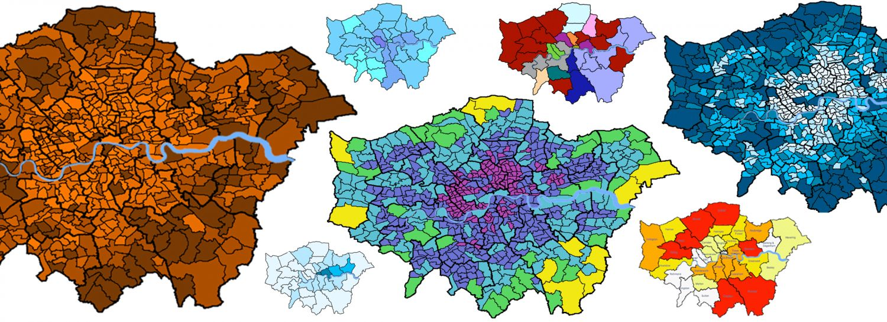
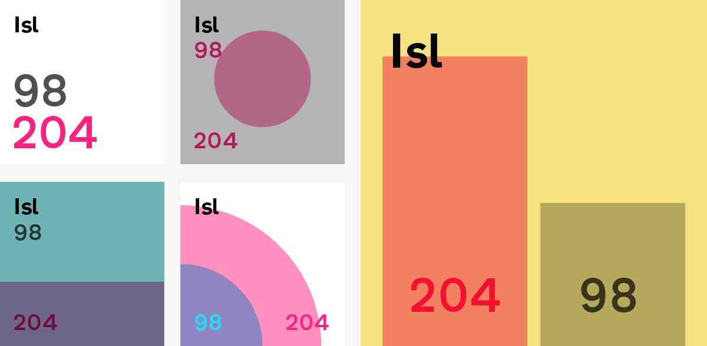
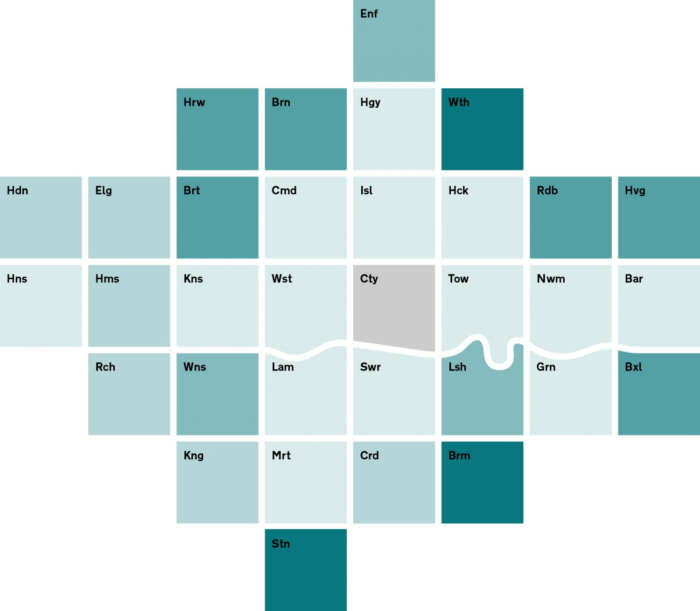
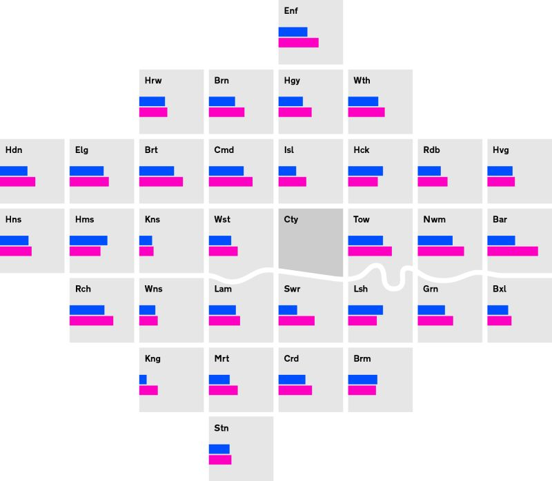
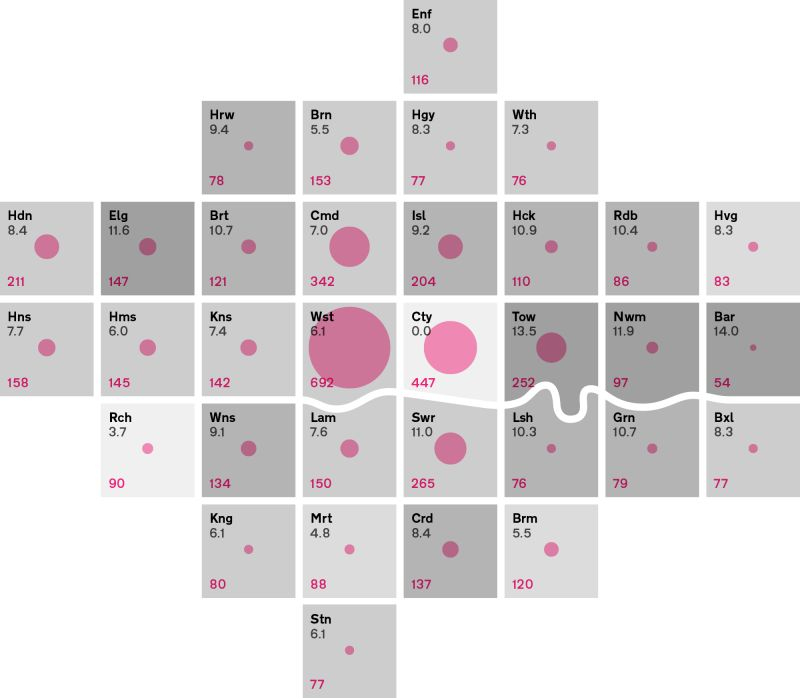
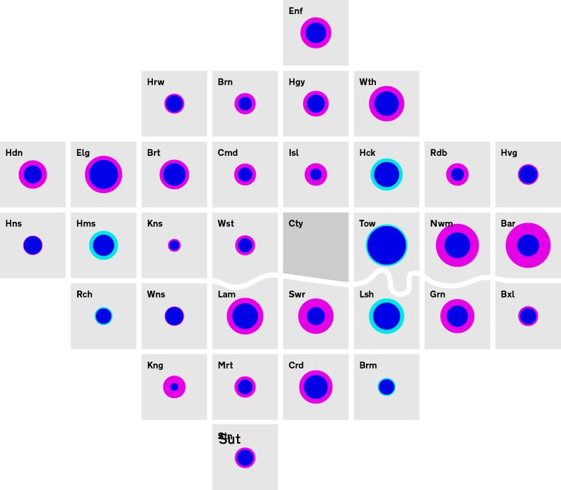
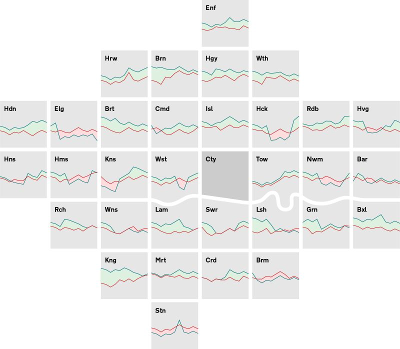

London Squared Map - Making the city easier to read
Future Cities Catapult
Future Cities Catapult has many programmes that require data analysis. London Squared came out of a partnership between us to develop product ideas that would help them and their network — anyone working in this field who wanted to create, use, and share data better. Key to this was the ability to compare data across the city’s 32 boroughs (33 if you include The City of London, not officially a borough). Unfortunately at the moment the only way of doing that spatially was to use a geographical map ...
The Trouble With Data Maps
Maps are excellent for navigating space, showing boundaries, landmarks, and location but lousy at imparting data. The visual impact of data shown in a spatial way is driven by the way areas of that space are divided. Low quantities seem higher if taking up more space. High qualities in lots of space dominate. Maps are uneven spaces – more developed areas tend to be smaller than rural areas. This creates an uneven ground on which to place figures – with important data finding no place to live.

During the product development work with Future Cities Catapult, it became clear that there was a need for a way to visual data across all boroughs that did not create a visual bias due to the relative size of individual boroughs.
We needed a new, non-geographic system to plot data.
Abstracting the City
How can a city be reshaped to allow for a more even presentation of data without obliterating the forms that make it a recognizable space?

Having got the squares to work, we needed to bring some basic recognisability back to the map. We wanted a degree of familiarity for the first time viewer.

London’s most recognisable geographic feature is the River Thames. We started to restyle it to fit between the squares, choosing which of it’s curves were most iconic.

Our first idea was to just have it running through the middle as an illustrative element, but this seemed clumsy and would interrupt the eye as it ‘read the city’.

Instead, we put the city back together, forcing it to give way to the key curves of the Thames – just as in real life. As a shape this also gave some poetry to the rational grid.
The Square Unit
Squares have the added benefit of being able to contain more data. Unlike circles, there are enough options for spatial significance in a square – top, bottom, left, right. Squares have space to allow data to be separate or connected to other data. The squares are also a usefully small module that can be shared individually when needed, and because of their regularised and bite-size scale, they work well on small screens.

The names of the boroughs have been abbreviated and vowels removed for maximum recognition and efficiency. This function needs to allow first time users to orient themselves as well as regular viewers to remind themselves and not have an obstructed view.
The London Squared Map, Version 1.0
The most basic map allows for a choropleth, or shaded cells, to show data. There has been minimal shuffling of the – and the placement of the river finishes this off economically. The basic map shows one set of data, but there are other possibilities for combining display types.


Bar charts are difficult to use in this space, but not impossible – and much easier than with a geographically accurate map!

Line charts can be mapped across the centre of the grid units. The river is an obstacle, but if the y-axis is limited to just the middle 60% of the squares there aren’t any issues.

Dots can be used to visualise quantities, and the use of colour multiplication lets us stack up sets of dots.

Bringing it all home, combining shading, dots, and numerical display for a richer account of the data.
We have plenty more work to do on the amount of data that can be shown and how to show different quantities and types of data. Watch this space.
Source: London data store